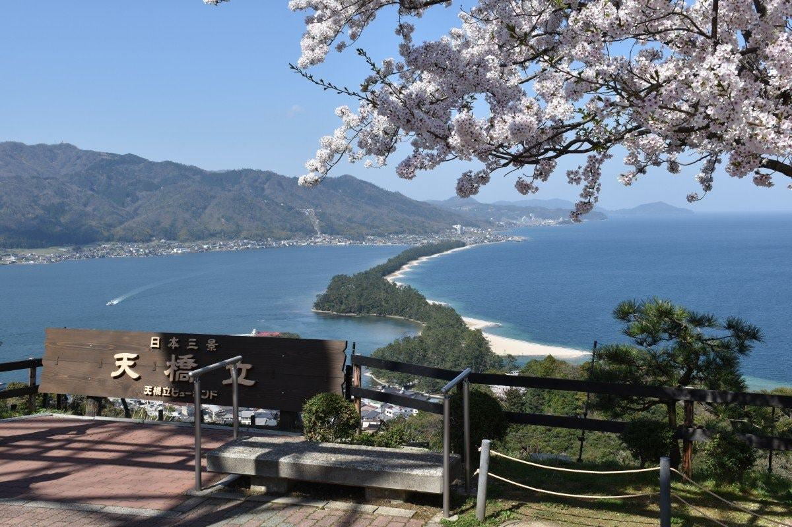

Amanohashidate View Land
С южного склона коса тянется через синюю воду, а перевёрнутый взгляд превращает её в летящего дракона.
🇯🇵 Показать местному
〒626-0001 京都府宮津市文珠437
Что этоСмотровой парк на горе Мондзю к югу от косы.
ГлавноеХирюкан — вид «летящего дракона».
Не пропуститеМатанодзоки: тот же пейзаж, увиденный между ног.
- Площадки матанодзоки — вдоль обращённого к косе края парка.
- Изгиб сосновой полосы — между двумя водными пространствами внизу.
- Хирюкан-кайро — извилистый приподнятый прогулочный помост в парке.
- 💡 Обязательно matanozoki — смотреть на Amanohashidate между ног. Chairlift даёт открытые виды, Monorail удобнее, если боитесь высоты.
- На площадке для матанодзоки встаньте устойчиво, повернитесь спиной к косе и посмотрите между ног, не выходя за ограждения.
- Билет включает вход и проезд туда и обратно; кресельный подъёмник и монорельс можно сочетать. Аттракционы оплачиваются отдельно.
История и подробности
На южной площадке сначала посмотрите на косу обычным способом: узкая сосновая полоса уходит от ближнего берега и изгибается среди воды. Затем попробуйте матанодзоки — взгляд между ног. Небо оказывается внизу, вода наверху, и знакомая линия берега начинает восприниматься как отдельная фигура.
Этот южный ракурс называется хирюкан: «вид летящего дракона». Название описывает сходство формы косы с драконом, а не отдельный природный объект. Позднее в тот же день парк Касамацу покажет ту же косу с противоположной стороны. Сравните направление изгиба и то, как меняется расстояние между берегами.
View Land соединяет смотровую площадку с небольшим парком развлечений. Приподнятый помост Хирюкан-кайро даёт ещё одну высоту взгляда; колесо обозрения и другие аттракционы окружают основную панораму. Для вашего визита главным остаётся сам ландшафт. Подъём устроен двумя способами: открытые кресла позволяют смотреть по сторонам, а монорельс предлагает поездку в вагоне.